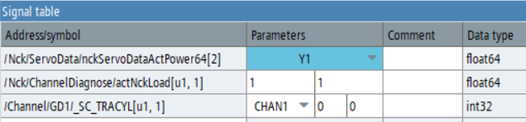

In a changeable NC/PLC trace configuration, variables can be added to the configuration either by selecting them from the variable list or by entering them in the address field of the signal table using an auto-complete list.
PLC variables are displayed with their symbolic names in the address field of the signal table. The memory address is only displayed if there is no symbol for this address. (The tooltip for the "Address / Symbol" field shows both the symbol and the address, if both are available.)
The address of the PLC variable can be edited. The address is thus replaced by another PLC address. Other variable addresses cannot be edited.
If parameters are available for a variable, these are displayed in the "Parameters" column of the signal table.
Machine axes, geometry axes and channel parameters can be selected from drop-down lists, which are filled with the identifiers of the axes/channels available on the machine. (Channel axis parameters are converted to machine axis names.)
| Note |
|
For geometry axes, the identifier in the application is not automatically converted. If you changed the channel or axis configurations, restart the application to update the identifiers. |
Numerical indices are displayed in editing fields. The number of editing fields can vary depending on how many indices are available or which indices can be changed for the variable in question.
If a variable address is added to the configuration and the address does not contain the indices, the following default values apply:
Axis and channel identifiers: Invalid selection (empty combo box).
OPI units, column and row indices: Value 1
The application does not check the lower or upper limit of the OPI indices. The online help in the variable selection list describes the correct index use for a specific variable.
Array indices: The default value is the lower limit of the array index range.
When moving the mouse pointer over the editing field, a tooltip shows the lower and upper limits of the index range. The array limit values are also displayed in the variable selection list.
If a parameter in a combo box or editing field is changed, the indices in the address field of the variable are updated accordingly.
When adding a variable, an address can be entered in the signal table together with the index part. The indices entered are then used to fill the "Parameter" column.
After adding or editing a variable, invalid parameter values are displayed with a red background color, and such errors prevent the start of a trace recording. (However, most parameter errors are not displayed directly after loading a session file as long as the configuration is not changed.)
If a parameter is changed for a signal that has already been recorded, the recorded data is deleted from the trace diagram.
A PLC1500 variable can be defined as a nested array structure with more than one index part in the address.
Example: LBP_AlarmMessages.Channel[1..10].FdStop_1[0..15]
No editing field is created for such a variable in the "Parameter" column. Instead, the complete address is displayed in the "Address" field and the indices must be edited there.
After adding the variables, the address shows the index ranges, e.g. [1..10]. The address field has a red background color because it is not yet valid. Double-click on the address field or press the insert key to set the field to editing mode. Enter the required indices in the address and press the Enter key to confirm them again.
As long as there are still index errors in the address, a tooltip informs you exactly about the type of error.
The index ranges of the variables have not yet been replaced by a valid index. And the other index is outside the valid range.